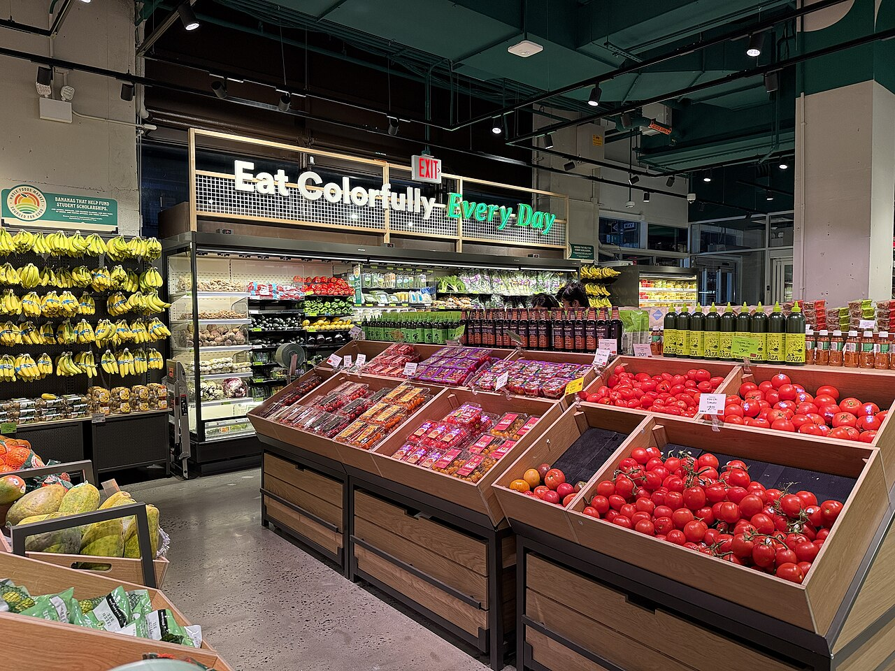
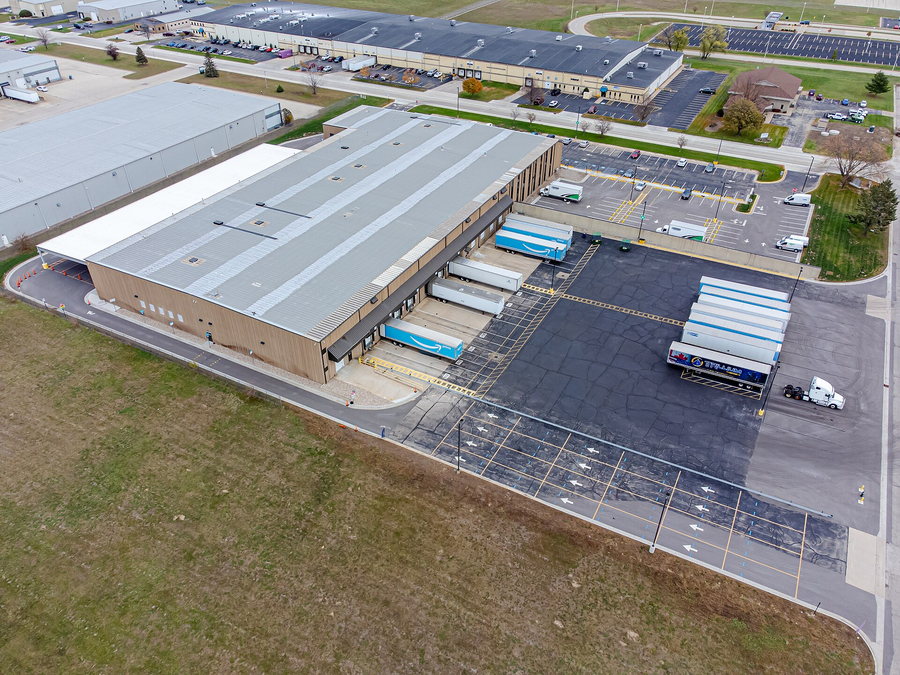

앞 글에서 아마존이 식료품이라는 빈칸을 채우려 서로의 땅을 넘보고 있다고 했다. 그 방법으로 한때 가장 화려했던 것은 계산대 없는 무인 매장이었다. 그런데 2026년 1월, 아마존은 그 실험을 접겠다고 발표했다.
무슨 일이 있었고, 그 자리에 아마존은 무엇을 짓고 있을까? 이 글은 접은 것과 넓히는 것을 나란히 놓고 아마존의 전략이 어디로 가는지 읽어 본다.
이 글에서 확인할 개념
라스트 마일풀필먼트 거점기술 실험과 사업성옴니채널프라이빗 라벨(PB)빈도와 습관01줄 서지 않는 가게라는 꿈
2018년 1월 22일, 시애틀에 Amazon Go 1호점이 일반에 문을 열었다. 카메라와 센서, 컴퓨터 비전으로 손님이 집어 든 물건을 알아보고, 가게를 나가면 자동으로 결제되는 ‘Just Walk Out’ 방식이었다. 계산대도, 줄도 없었다. 2023년에는 시애틀, 시카고, 로스앤젤레스, 런던, 뉴욕에 모두 43곳의 매장이 열렸거나 예고되었다.
아마존은 이 기술을 더 큰 식료품점에도 가져갔다. Amazon Fresh는 2007년 워싱턴주에서 초대받은 사람만 쓰는 식료품 배송으로 출발했고, 2020년에는 오프라인 슈퍼마켓 체인으로 모습을 바꿨다.
02꿈이 삐걱대기 시작하다
2024년 4월 아마존은 Fresh 매장에서 Just Walk Out 기술을 빼겠다고 밝혔고, 대신 손님이 카트에 달린 스캐너로 직접 찍는 대시 카트(Dash Cart)를 쓰기로 했다. 무인 결제라는 간판을 스스로 내린 셈이다. 설치와 유지 비용이 크다는 점과, 자동 같아 보여도 결제를 확인하는 데 많은 사람이 투입된다는 보도가 이어졌다.
032026년 1월 27일, 폐점 발표
2026년 1월 27일, 아마존은 Amazon Go와 Amazon Fresh 매장을 접고 홀푸드마켓과 식료품 배송에 집중하겠다고 발표했다. 보도에 따르면 대상은 Fresh 57곳, Go 15곳으로 모두 72곳이었고, 캘리포니아는 주 규정 때문에 더 늦게 닫는다. 일부는 홀푸드로 바뀐다.
이유로 아마존이 든 말은 이렇다. 아마존 브랜드 매장에서 고무적인 신호는 봤지만, “대규모로 확장하기에 알맞은 경제성을 갖춘, 진정으로 차별화된 고객 경험을 아직 만들지 못했다”는 것이다.
Just Walk Out 기술 자체가 사라지는 것은 아니라는 보도도 있다. 경기장, 병원, 공항 같은 곳의 제3자 매장에 기술을 빌려주는 사업으로 이어진다는 것이다. 매장에서는 접고 기술은 판다. 아마존이 자주 쓰는 방식이다.
04접은 것과 넓히는 것
| 접은 것 | 넓히는 것 |
|---|---|
| Amazon Go (소형 무인 매장) | 홀푸드마켓 신규 출점 100곳 이상 계획 |
| Amazon Fresh (대중형 슈퍼마켓) | 당일 신선식품 배송, 2,300여 개 도시로 확대 목표 |
| Just Walk Out의 자체 매장 활용 | 농촌 배송망 40억 달러 투자, 배송 거점 200곳 |
| 슈퍼센터 구상(교외형 대형 매장) |
눈여겨볼 점은 접은 것이 모두 아마존 브랜드를 단 작은 매장이라는 것이다. 반면 넓히는 것은 인수해서 이미 자리를 잡은 홀푸드와, 매장이 아니라 배송 인프라다. 매장 자체가 목적이 아니라는 신호다.
05홀푸드, 그리고 도시의 작은 매장
아마존은 이제 오프라인에서 사실상 홀푸드 하나를 남긴다. 아마존은 홀푸드가 2017년 인수 이후 매출이 40% 넘게 늘었고 매장이 550곳 넘게 있다고 밝혔다. 그리고 앞으로 100곳 이상 새로 열 계획이다.

도심에는 작은 형태의 홀푸드 데일리 숍(Daily Shop)이 있다. 2024년 맨해튼에서 시작한 소형 점포로, 아마존은 2026년 말까지 5곳을 더 연다고 밝혔다.
정리하면 도심의 작은 매장은 ‘아마존’이 아니라 홀푸드 이름으로 늘어난다.
06라스트 마일: 마지막 구간에 돈을 쏟다
라스트 마일(last mile)은 물건이 지역 거점에서 고객의 집 앞까지 가는 마지막 구간이다. 배송 비용에서 가장 큰 비중을 차지하는 구간으로 흔히 꼽힌다. 아마존이 매장을 접고 이 구간에 힘을 싣는 이유가 여기 있다.

- 농촌 배송망: 2026년 말까지 40억 달러를 투자해 배송 거점 200곳을 새로 열고 1만 3천 개가 넘는 우편번호 지역에 닿게 한다. 농촌의 배송 속도를 최대 50% 높이겠다는 목표다.
- 당일 신선식품 배송: 약 1,000여 개 도시에서 2,300여 개 도시로 확대했거나 확대 중이다. 아마존은 이 서비스의 신선식품 매출이 2025년 1월 이후 40배 늘었고, 서비스 지역에서 가장 많이 주문된 상품 열 가지 중 아홉 가지가 신선식품이라고 밝혔다.
- 초고속 배송: 30분 배송 ‘Amazon Now’를 몇몇 도시에서 시험 중이다.
영상: Inside Amazon’s Meticulous Same-Day Delivery Strategy, WSJ Shipping Wars. 당일 배송 전략을 다룬다.
이 숫자들은 모두 아마존이 직접 밝힌 것이거나 이를 인용한 보도다. 눈에 띄는 것은 식료품이 배송의 ‘핵심 상품’이 되어 간다는 점이다. 앞 글의 말을 빌리면 빈도 높은 소비가 배송망을 끌고 간다. 자주 오는 주문이 있어야 촘촘한 거점이 경제성을 갖는다.
07그런데 왜 슈퍼센터인가
한 가지 더 있다. 매장을 접는다면서 슈퍼센터라니 모순 아닐까? 보도에 따르면 시카고 근교 올랜드 파크에 약 22만 9천 제곱피트, 약 2만 1천 제곱미터 규모의 매장이 계획되어 있고 개점은 2027년으로 알려졌다. 절반은 손님이 걷는 매장이고, 절반은 소형 물류센터다. 아마존 발표문에는 이를 “탐색 중인 새로운 콘셉트”라고만 적었다.
이 구조를 이렇게 읽을 수 있다.
| 무인 매장 (접음) | 슈퍼센터 (구상) |
|---|---|
| 작은 매장, 기술이 핵심 | 큰 매장, 물류가 핵심 |
| 매장은 손님을 받는 곳 | 매장이 배송 거점을 겸함 |
| 경제성이 불투명 | 매장과 물류의 규모의 경제를 노림 |
월마트의 방식, 곧 매장이 곧 물류센터라는 모델을 아마존이 자기 식으로 받아들이는 모습처럼도 보인다. 앞 글에서 본 대로 서로의 방식을 닮아 가는 것이다.
08식품 셀러에게 이 흐름은 무엇을 뜻할까
한국 식품을 아마존에서 파는 셀러라면 이 흐름이 남의 이야기가 아니다. 식품이 아마존 전략의 한가운데로 들어오고 있기 때문이다.
| 기회 | 위험 |
|---|---|
| 식품을 찾는 트래픽과 구매 빈도가 늘어난다 | 아마존과 홀푸드의 자체 브랜드(PB)와 직접 경쟁할 수 있다 |
| 당일·초고속 배송이 식품의 편의성을 높인다 | 빠른 배송 속도에 맞는 재고와 물류 대응이 요구된다 |
| 홀푸드 같은 오프라인 접점이 생길 가능성 | 가격 경쟁이 더 치열해질 수 있다 |
그리고 2편에서 본 문제가 더 커진다. 식료품은 규격화된 상품에 가까워서, 아마존 안에서 차별화할 여지가 더 좁다. 그래서 한국 식품이라는 이야기는 아마존 밖에서 더 열심히 만들어야 한다. 웨지우드가 쇼룸에서 이야기를 전시했듯이.
생각해 볼 질문
- 무인 매장은 기술적으로 성공했는데 왜 사업적으로는 접혔을까? 기술과 사업의 차이는 무엇인가?
- 라스트 마일에 쓰는 비용을 아마존은 누구에게서 회수하게 될까? 소비자, 셀러, 아마존 자신 중 누구일까?
- 아마존이 월마트의 방식을 닮아 가는 것은 승리일까, 양보일까?
- 식품 셀러가 아마존의 PB와 겹칠 때 어떤 전략이 가능할까?
- 나라면 아마존의 ‘접은 것’과 ‘넓히는 것’ 중 어디에 투자하겠는가?
참고출처와 이미지
- Amazon 공식 발표, “Amazon Fresh와 Go 매장 폐점 및 홀푸드 확대”(aboutamazon.com, 2026.5 갱신)
- WTOP, “Amazon to close most Amazon Go and Amazon Fresh stores” (2026.1.27); Chain Store Age, “Amazon launches one of its most significant grocery expansions”
- Retail Dive, “Amazon rural delivery expansion”; GeekWire, “Amazon supersizes its Walmart rivalry with new big box retail concept”(2026); Shelf Awareness(2026.1)
- Wikipedia, “Amazon Go”, “Amazon Fresh”, “Whole Foods Market”
- 이미지: Wikimedia Commons. Amazon Go(Brianc333a, CC BY-SA 4.0), 배송 스테이션(Wikideas1, CC0), 홀푸드 데일리 숍(Nielsoncaetanosalmeron, CC BY 4.0)
- 영상: The Wall Street Journal (YouTube 임베드)